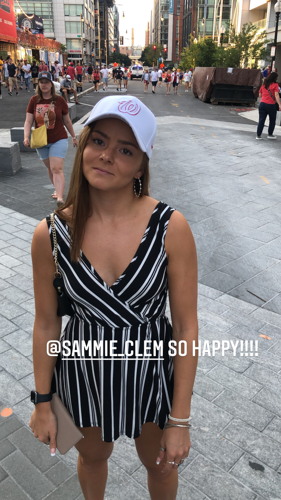

THE OFFICIAL WEBSITE OF THE PLANE RIDE FROM DCA TO DCO (DEVNER, COLORADO?)
Frontier doesnt have wifi who fuckin knew!!!
Welcome folks! Today we introduce this shitty ass website detailing Frontier flight 539 to Denver, Colorado and give you a little introduction into the people we are flying with! Its been about 2.5 hours into the flight and its been wonderful so far, hopefully you have as enjoyable of a time reading this as we did living it!
First off we have marissa, came in real strong to the airport this afternoon with matching luggage & ski bag and showed no visible signs of stress despite being tasked with wrangling more than a bakers dozen of horny and unruly YoPros. Seems refreshed and ready to lead the team to the promised land.
Next we have T! not actually sure if shes on this plane because of how far back she is, might actually be hanging onto the tail of the plane for dear life, but alas she's here too! She was one of the first ones here so wether her sunny disposition this afternoon came from a good nights sleep or an extra mimosa, only god knows but ignorance is bliss here aboard flight 539.
Sam a lamma ding dong is next, shes somewhere in the middle of the plane somewhere probably half trying to get work done half fighting with casey for the arm rest (the pilot just came out of the cockpit while i was typing this to go to the bathroom and nobody was really flying th eplane for the past 5 ish minutes or so so thats cool). Sam is great on long trips mainly due to all of her journeys from tysons to DC which take about as long as this flight is going to last so shes used to trekking.

I know damn well where casey is because he keeps shooting me dirty looks every time i turn around, or stand up, or go to the bathroom, or take a sip of water, you name it. he bought me a beer & a whiskey today (cause i got stuck in the POOR PEOPLE tsa line) so he gets all my gratitude and love on this flight. Hes being a pretty good passanger, not causing trouble or being loud but im worried he might hit his head on some super important piece of plane so will be rooting for him to remain seated for the remainder of this flight.
Tess is Nessxt! Starts off her bio with a 11/10 rating for giving me a pen to play with when i forgot to download movies becuase i thought frontier had wifi on the plane, great pen and great friend (and look at that handsome devil next to her!). Was the conductor of the mimosa train this morning and will surely be bringing ol thomas the champage engine into the station nice and smoothly this evening with whats sure to be car beers while casey is driving to the airbnb

Well that wraps it up folks, this was a pretty big waste of time but i guess it killed some of it. SEE YALL ON THE MOUNTAIN!